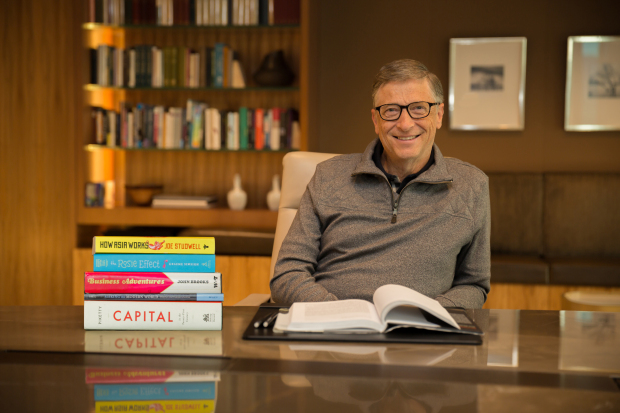

Bill Gates

-
Co-founder of Microsoft
-
Software Developer
-
Investor
-
Entrepreneur
-
Presidential Medal of Freedom (2016)
“We all need people who will give us feedback. That’s how we improve.”
~Bill Gates
——— Biography ———
Bill Gates turned his fortune from software firm Microsoft into a diversified fortune; his focus has shifted to zero-carbon energy investing and philanthropy.
On May 3, 2021, Bill and Melinda each announced on Twitter they were ending their marriage after 27 years. They will still co-chair the foundation.
Gates, who cofounded Microsoft with Paul Allen (d. 2018) in 1975, has transferred at least $5.7 billion worth of shares in public companies to Melinda.
As of March 2020, when Gates stepped down from the Microsoft board, he owned about 1% of the software and computing company's shares.
He has invested in dozens of companies including Canadian National Railway and AutoNation, and is one of the largest owners of farmland in the U.S.
To date, Gates has donated $35.8 billion worth of Microsoft stock to the Gates Foundation.
——————————————————————————
All rights reserved , Designed by Jatin Bhirud